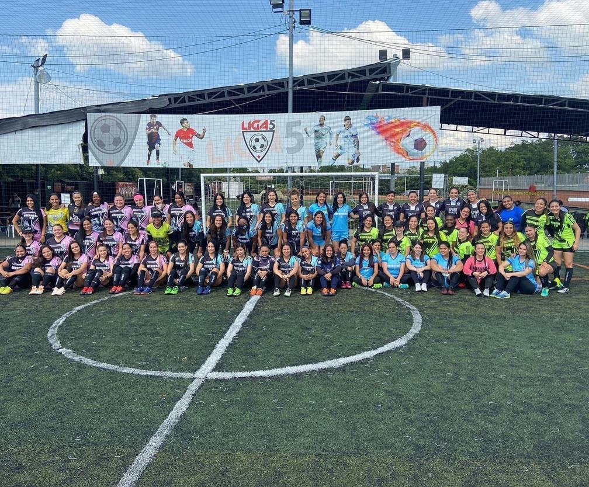

Familia en el campo
Los lazos van más allá del partido. En Guerreras FC cada jugadora tiene un lugar y un nombre.
Sé parte de
En el corazón de Cali nació un sueño: inspirar a las mujeres a través del fútbol, construir una familia en el campo y fomentar una vida saludable. Hoy somos el equipo de fútbol femenino amateur más grande de Colombia.

01
No somos solo un equipo. Cada jugadora es valorada, apoyada y celebrada.
Los lazos van más allá del partido. En Guerreras FC cada jugadora tiene un lugar y un nombre.
Abrimos las puertas a mujeres mayores de edad, de cualquier nivel. Celebramos la diversidad y jugamos juntas.
El fútbol es la excusa para soltar la rutina, moverse y cuidarse, sin dejar de disfrutar el deporte.

02
03
Valores de la guía de inscripción. El equipo confirma cupo, talla y medio de pago por WhatsApp.
04
Fútbol 6 en cancha sintética. Cada sede entrena entre semana y el sábado.
Norte
Av 3F Norte # 52, dentro del Éxito de La Flora.
Lunes 8:30 p.m. · Sábado 4:00 p.m.
Cómo llegarSur 1
Cra 70 # 13-90, al lado de Simon Parrilla.
Lunes 8:00 p.m. · Sábado 4:00 p.m.
Cómo llegarSur 2
Cra 56 # 12a-01, entre la autopista y Paso Ancho.
Martes 8:00 p.m. · Sábado 4:00 p.m.
Cómo llegar